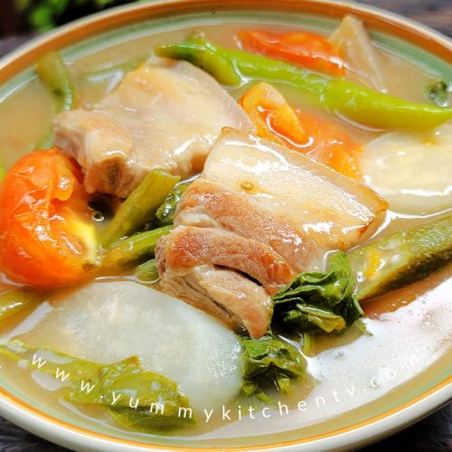

Sinigang

Sinigang is a Filipino soup or stew
characterized by its sour and savory taste.
It is most often associated with tamarind (Filipino: sampalok),
It is one of the more popular
dishes in Filipino cuisine.
Ingredients
- 2 lbs Pork belly
- 1 bunch Spinach
- 3 tablespoons fish sauce
- 12 pieces string beans (cut in 2 inch lengths)
- 2 pieces tomato
- 3 pieces green chili (the long one)
- 1 tablespoon cooking oil
- 2 quarts water
- 1 piece onion (sliced)
- 2 pieces taro (quartered)
- 1 pack sinigang mix
Steps
- Heat the pot and put-in the cooking oil
- Saute the onion until its layers separate from each other
- Add the pork belly and cook until outer part turns light brown
- Put-in the fish sauce and mix with the ingredients
- Pour the water and bring to a boil
- Add the taro and tomatoes then simmer for
40 minutes or until pork is tender
- Put-in the sinigang mix and chili
- Add the string beans (and other vegetables if there are any)
and simmer for 5 to 8 minutes
- Put-in the spinach, turn off the heat, and cover the pot.
Let the spinach cook using the remaining heat in the pot.
- Serve hot. Share and enjoy!